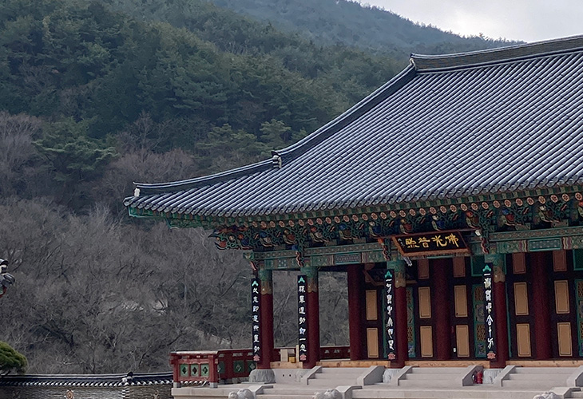

이 프로젝트는 작년 크리스마스 즈음, 친구와 여행을 계획하던 중에 나온 이야기로부터 추진된 건이다. 서울에서 하는 맛집-카페-(문화생활)-카페 루트에 신물이 났던 우리는, 최대한 문명과 단절된 곳을 찾아가보고 싶었다. 한국에서 가장 속세와 떨어진 곳이 어디일까 생각해보다가 템플스테이 가 머릿속을 스쳐 지나갔고 그대로 내뱉고 말았다. 템플스테이라면 ‘가보고 싶다 근데 한 10년뒤?’ 라는 막연한 인상만 있었는데 막상 질러보니.. 정말 가고 싶어져버린 것이었다.
일정은 개강 직전, 가장 따뜻한 날에 가자는 친구의 의견에 따라 2월 중순으로 계획되었다. 2월까지는 한달도 넘게 남은 시점이었지만 극J인 우리는 앉은자리에서 전국팔도의 템플스테이를 서치하다가 구례의 유명한 곳을 예약해버렸고, 앞뒤로 여수와 전주를 가는 일정까지 세워버렸다. 속세-탈속세-속세가 되어 그냥 수미상관으로 속세에 찌들다 서울가는 사람이 되는건 아닌가 싶었으나, 2n년 인생 중 하루라도 문명과 떨어져보는 것임에 의의를 두고 그대로 진행시켰다.
시간은 흘러흘러 금새 여행 당일이 되었고 내일로를 타고 여수부터 향했다. 전날 대전을 갔다온지라 5일연속 여행은 무리가 아닐까 싶었지만 방학동안 보충된 체력을 믿어보기로 했다.(뭐야 아껴써요) 여수에서의 별거없는 하루가 지나고 둘째날 구례로 가기 위해 머나먼 길을 떠났다. 우리는 겁도 없이 여수역에서 구례구역까지 기차를 타고, 30분만에 택시를 잡고(.. 버스터미널까지 가서 배차간격이 280분정도는 되는 것 같은 버스를 탄 다음에 절 입구에서 1km를 걷는 극악무도한 일을 감행했다. 걷고 또 걸으면서 생각했다. 우리 탈속세하러 온거 맞구나..
준비된 체력이 모두 소진되었을 무렵 절에 도착했고 곧 커다란 마루에 모여 오티영상을 시청했다. 영상에 나오는 찰흙 캐릭터들이 웃기게 생겨서 나 혼자 웃참하느라 힘들었다. 인내의 시간을 보낸 뒤에는 절 한바퀴를 둘러보았다. 국보 문화재도 있고 오랜세월에 빛이 다 바랜 절도 있어서 마음이 절로 경건해졌다. 그러다 절의 꼭대기에 있다는 문화재를 보기 위해 엉겁결에 108계단을 오르게 되었는데, 막 날라다니는 가이드분을 제외하고는 전부 이 깍 깨물고 올라갔다. 남은 체력을 탈탈 털어내고 방에서 잠깐 쉬고나니 가장 고대하던 저녁시간이 찾아왔다.
이제 와 고백하자면 우리가 절을 고른 기준은 단 하나였다. 밥이 맛있는가. 이 곳을 예약하고 기다리던 중에 방탄 rm씨가 여기를 다녀갔다는 기사가 떴기에 우리에게는 더욱 큰 확신이 생겼다. (사실 rm씨도 같은 목적으로 왔는지, 미식가인지도 모르겠다. 아마 둘 다 아니겠지..) 아무튼 기대를 가득 품고 식당에 들어갔는데 뷔페형식인데다 개별 그릇마다 음식을 담을 수 있어서 음식이 섞일 일이 없어서 좋았다. 분명 다 채식인데 뭘로 간을 하신건지 도시입맛에 길들여진 나의 입맛에도 충분히 맛있어서 남김없이 싹 비워냈다. 발우공양은 없었지만 대신 본인이 먹은 그릇은 설거지를 해야했다.

밥을 먹고나니 사물놀이 시간이 있다고 해서 어지간히 뚝딱거리겠다며 걱정하던 찰나, 스님들끼리 교대로 연주하는 의례 같은거라 해서 머쓱해졌다. 상상과 달리 다들 북을 리드미컬하게 치셔서 흥미로웠는데, 뒤로 갈수록 힘드신지 즉흥연주 같아졌다. 북이고 뭐고 퇴근하고 싶은 마음인걸까나. 사물놀이가 끝나고 방사로 돌아가는 도중에 고양이들을 꽤 많이 만났다. 그 중에서도 이 절의 마스코트 호두가 개냥이라 귀여웠다.
템플스테이라고 하면 전자기기를 반납해야할 것 같은데, 오히려 전용 와이파이도 있고 폰 사용이 자유로웠다. 밤까지 폰을 잡고 있다가 졸음이 몰려와서 일찍 잠들었다. 다음날 새벽 5시에 일어나서 뿌듯했는데 생각해보니 이제는 이게 내 일상이라니. 아침을 먹고 다시 잠들었다가 사람들이랑 차담한 뒤에 점심먹고 기차시간 때문에 조금 일찍 퇴소했다. 무슨 먹다가 하루가 끝난 것 같은데, 1박만 하고 가는게 아쉬울 정도로 걱정없이 쉬었고 지리산에 둘러싸여 힐링할 수 있었던 시간이었다. 솔직히 속세는 여기서도 못 놓은 것 같긴한데 다음번에는 완전히 내려놓고 다녀와볼 생각이다.